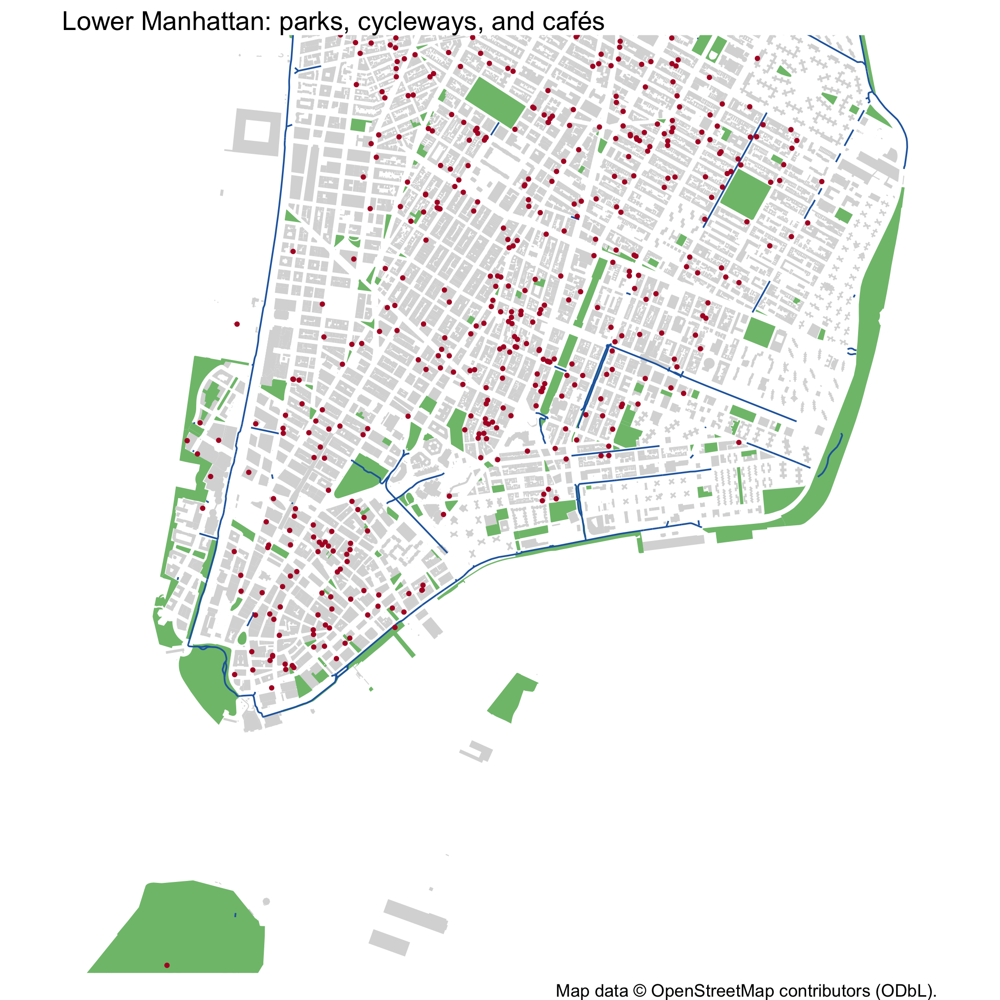

The nycosm package provides OpenStreetMap (OSM) features for New York City, from the Geofabrik extract of 18 October 2026: points of interest, streets and paths, rail, buildings, land use, parks, water, and transit routes, with all their OSM tags. There are about 2.5 million features in five layers. They are stored as GeoParquet files in EPSG:2263 and accessed via duckplyr, so you read only the rows and columns you need.
Map data © OpenStreetMap contributors, available under the Open Database License (ODbL) 1.0. The bundled data are a database derived from OSM and are also under the ODbL. The package code is MIT licensed.
Installation
You can install the development version of nycosm from GitHub with:
# install.packages("pak")
pak::pak("kjhealy/nycosm")What’s included
Each layer has its own function, returning a lazy data frame. Use dplyr verbs to query it, collect() to bring results into R, and nyc_osm_to_sf() to get an sf object. Every function takes a borough argument.
| Function | Features | Rows |
|---|---|---|
nyc_osm_points() |
Points of interest, transit stops, crossings, street furniture, trees | 701,481 |
nyc_osm_lines() |
Streets, footways, cycleways, rail, waterways, barriers | 471,643 |
nyc_osm_buildings() |
Buildings | 1,089,132 |
nyc_osm_areas() |
Land use, parks, leisure, water, natural features, amenity areas | 202,990 |
nyc_osm_routes() |
Bus, subway, train, ferry, bicycle, and hiking routes | 2,426 |
nyc_osm_points() |>
select(-geometry)
#> # A duckplyr data frame: 34 variables
#> osm_type osm_id name amenity shop cuisine highway public_transport railway
#> <chr> <dbl> <chr> <chr> <chr> <chr> <chr> <chr> <chr>
#> 1 node 1.20e10 <NA> waste_… <NA> <NA> <NA> <NA> <NA>
#> 2 node 1.13e10 Aaka… <NA> <NA> <NA> <NA> <NA> <NA>
#> 3 node 1.20e10 <NA> vendin… <NA> <NA> <NA> <NA> <NA>
#> 4 node 1.06e10 <NA> <NA> <NA> <NA> <NA> <NA> <NA>
#> 5 node 1.20e10 <NA> waste_… <NA> <NA> <NA> <NA> <NA>
#> 6 node 1.30e10 <NA> <NA> <NA> <NA> crossi… <NA> <NA>
#> 7 node 1.30e10 <NA> <NA> <NA> <NA> <NA> <NA> <NA>
#> 8 node 1.11e10 <NA> <NA> <NA> <NA> <NA> <NA> <NA>
#> 9 node 1.11e10 <NA> <NA> <NA> <NA> <NA> <NA> <NA>
#> 10 node 1.30e10 <NA> <NA> <NA> <NA> <NA> <NA> <NA>
#> # ℹ more rows
#> # ℹ 25 more variables: leisure <chr>, tourism <chr>, natural <chr>,
#> # barrier <chr>, man_made <chr>, office <chr>, craft <chr>, healthcare <chr>,
#> # emergency <chr>, historic <chr>, place <chr>, brand <chr>, operator <chr>,
#> # opening_hours <chr>, website <chr>, phone <chr>, wheelchair <chr>,
#> # addr_housenumber <chr>, addr_street <chr>, addr_postcode <chr>, ref <chr>,
#> # wikidata <chr>, tags <list>, borough <chr>, osm_extract <date>Common tags are columns. The tags column has every OSM tag of each feature; nyc_osm_add_tags() pulls any of them out into columns.
nyc_osm_points(borough = "Brooklyn") |>
filter(amenity == "cafe") |>
nyc_osm_add_tags(c("outdoor_seating", "internet_access")) |>
count(outdoor_seating, internet_access) |>
arrange(desc(n)) |>
collect()
#> # A tibble: 38 × 3
#> outdoor_seating internet_access n
#> * <chr> <chr> <int>
#> 1 <NA> <NA> 414
#> 2 yes <NA> 75
#> 3 sidewalk <NA> 61
#> 4 <NA> wlan 60
#> 5 no <NA> 51
#> 6 yes wlan 17
#> 7 no wlan 16
#> 8 sidewalk wlan 11
#> 9 sidewalk;street <NA> 11
#> 10 <NA> yes 10
#> # ℹ 28 more rowsExample: what’s on the map
nyc_osm_points() |>
filter(!is.na(amenity), !is.na(borough)) |>
count(borough, amenity) |>
collect() |>
filter(amenity %in% c("restaurant", "cafe", "bar", "fast_food", "pharmacy")) |>
tidyr::pivot_wider(names_from = amenity, values_from = n)
#> # A tibble: 5 × 6
#> borough bar cafe fast_food pharmacy restaurant
#> <chr> <int> <int> <int> <int> <int>
#> 1 Bronx 23 30 174 55 221
#> 2 Brooklyn 463 802 1433 279 1729
#> 3 Manhattan 662 1242 1539 295 3426
#> 4 Queens 235 412 1125 351 1830
#> 5 Staten Island 24 64 247 94 443Example: a map
Parks, cycleways, and cafés in lower Manhattan.
library(sf)
parks <- nyc_osm_areas(borough = "Manhattan") |>
filter(leisure == "park") |>
collect() |>
nyc_osm_to_sf()
buildings <- nyc_osm_buildings(borough = "Manhattan") |>
select(osm_id, geometry) |>
collect() |>
nyc_osm_to_sf()
cycleways <- nyc_osm_lines(borough = "Manhattan") |>
filter(highway == "cycleway" | cycleway %in% c("lane", "track")) |>
collect() |>
nyc_osm_to_sf()
cafes <- nyc_osm_points(borough = "Manhattan") |>
filter(amenity == "cafe") |>
collect() |>
nyc_osm_to_sf()
ggplot() +
geom_sf(data = buildings, fill = "gray85", color = NA) +
geom_sf(data = parks, fill = "#7fbf7b", color = NA) +
geom_sf(data = cycleways, color = "#2166ac", linewidth = 0.4) +
geom_sf(data = cafes, color = "#b2182b", size = 0.6) +
coord_sf(
xlim = c(978000, 992000),
ylim = c(191000, 206000),
crs = 2263,
datum = NA
) +
labs(
title = "Lower Manhattan: parks, cycleways, and cafés",
caption = "Map data © OpenStreetMap contributors (ODbL)."
) +
theme_void()
OSM and official NYC data
OSM is edited by volunteers. For authoritative building footprints, streets, and boundaries, use nycbuildings, nyclion or nycstreets, and nycmaps. Most OSM buildings in NYC were imported from the city’s footprints; their nycdoitt_bin column joins to bin in nycbuildings. OSM adds what the city’s files do not have: points of interest, footways and cycleways, transit stops and routes, land use, and natural features, along with building types and names.
Data source
- Geofabrik, New York State extract
new-york-261018.osm.pbf(OSM replication timestamp 2026-10-18T20:25:06Z). - Clipped to within 500 feet of the borough boundaries in nycmaps.